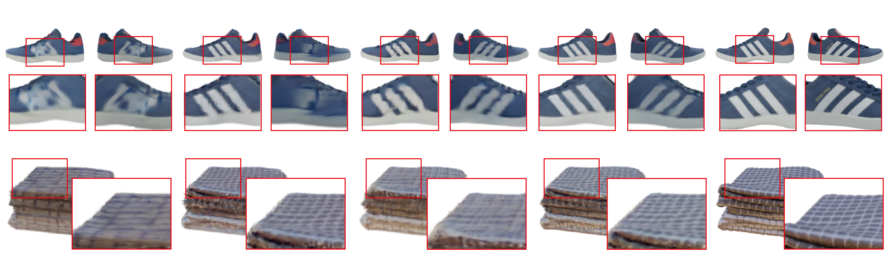

1BNRist, Tsinghua University
2University of the Chinese Academy of Sciences
3VAST
*Intern at VAST
†Corresponding Authors
Recent advancements in 3D reconstruction from single images have been driven by the evolution of generative models. Prominent among these are methods based on Score Distillation Sampling (SDS) and the adaptation of diffusion models in the 3D domain. Despite their progress, these techniques often face limitations due to slow optimization or rendering processes, leading to extensive training and optimization times. In this paper, we introduce a novel approach for single-view reconstruction that efficiently generates a 3D model from a single image via feed-forward inference. Our method utilizes two transformer-based networks, namely a point decoder and a triplane decoder, to reconstruct 3D objects using a hybrid Triplane-Gaussian intermediate representation. This hybrid representation strikes a balance, achieving a faster rendering speed compared to implicit representations while simultaneously delivering superior rendering quality than explicit representations. The point decoder is designed for generating point clouds from single images, offering an explicit representation which is then utilized by the triplane decoder to query Gaussian features for each point. This design choice addresses the challenges associated with directly regressing explicit 3D Gaussian attributes characterized by their non-structural nature. Subsequently, the 3D Gaussians are decoded by an MLP to enable rapid rendering through splatting. Both decoders are built upon a scalable, transformer-based architecture and have been efficiently trained on large-scale 3D datasets. The evaluations conducted on both synthetic datasets and real-world images demonstrate that our method not only achieves higher quality but also ensures a faster runtime in comparison to previous state-of-the-art techniques.
The overview of our framework. Given an image with its camera parameters, we first encode them into a set of latent feature tokens by leveraging a pre-trained ViT model. Our two transformer-based networks, point cloud decoder and triplane decoder, take initial positional embedding as input and project image tokens onto latent feature tokens of respective 3D representation via cross-attention. Subsequently, a point cloud and a triplane can be de-tokenized from the output of decoders, respectively. After the point cloud decoder, we adapt a point upsampling module with condition-aware projection to densify the point cloud. Additionally, we utilize a geometryaware encoding to project point cloud features into the initial positional embedding of triplane latent. Finally, 3D Gaussians are decoded by the point cloud, the triplane features and image features for novel view rendering.
Qualitative comparison between Zero-1-2-3, One-2-3-45 and Ours on GSO (Google Scanned Object) dataset.
More results from GSO dataset.
Qualitative comparison between different 3D representations: (1) naive generalizable 3D Gaussian (3DG), (2) Triplane-NeRF and (3) Triplane-Guassian.
Ablation experiments to assess the effect of Projection-aware Condition (P.C.) and Geometry-aware Encoding (G.E.).
@article{,
title={Triplane Meets Gaussian Splatting: Fast and Generalizable Single-View 3D Reconstruction with Transformers},
author={Zi-Xin Zou, Zhipeng Yu, Yuan-Chen Guo, Yangguang Li, Ding Liang, Yan-Pei Cao, Song-Hai Zhang},
journal={arXiv preprint arXiv:xxxx},
year={2023}
}